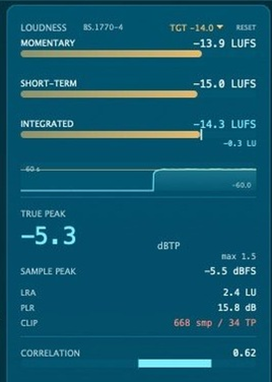

GUIDE
A free LUFS meter that measures by the standard
LudensScope shows the four numbers that matter — momentary, short-term and gated integrated loudness, plus true peak — and the metering is free, with no time limit, no account and no telemetry.

What LUFS measures
LUFS is loudness normalised to full scale. The signal is K-weighted (a high-pass near 38 Hz and a high shelf near 1.5 kHz), squared, averaged over a window, and expressed relative to full scale. One unit of loudness, 1 LU, equals 1 dB. Because it averages over time and applies the weighting, it sits much closer to perceived level than a peak or RMS meter — and the low end counts less, the way it does in hearing.
The algorithm is defined in ITU-R BS.1770-4. EBU R128 uses the same measurement with a −23 LUFS target for broadcast.
The four numbers on the meter
| Reading | Window | What it tells you |
|---|---|---|
| Momentary | 400 ms | What is happening right now. Useful for balance, useless as a delivery number. |
| Short-term | 3 s | The energy of a section: verse, chorus, drop. |
| Integrated | Whole programme, gated | The number delivery specs talk about. |
| LRA | EBU Tech 3342 | How much loudness moves across the track. |
| PLR | Peak minus integrated | Headroom between the loudest peak and the average. |
| True peak | 4× oversampled | Inter-sample peaks a sample meter cannot see. |
Gating, and why the integrated number keeps moving
Integrated loudness is not a plain average. BS.1770 gates it twice: an absolute gate discards everything below −70 LUFS so silence does not drag the number down, and a relative gate discards anything more than 10 LU below the ungated mean, so quiet intros and breakdowns do not pull it down either.
That is why the integrated value settles only after the track has played through. Measuring a 20-second loop will never match the finished number — and if you reset it mid-song, you are measuring the wrong thing.
Delivery targets are not mix targets
Streaming platforms normalise on playback, so a mix above the target simply gets turned down. The common references:
| Target | Where it comes from |
|---|---|
| −14 LUFS | Spotify, YouTube, Amazon Music — normalisation reference |
| −16 LUFS | Apple Podcasts and most podcast specs |
| −23 LUFS | EBU R128 broadcast |
| −24 LKFS | ATSC A/85 broadcast (US) |
Treat them as a delivery target, not as a reason to crush the mix. Mix for balance and dynamics, watch the short-term and integrated values, then adjust the master so the integrated lands where the delivery needs it.
Sample peak is not true peak
A sample meter reads the values at sample instants; reconstructed audio can overshoot between them. LudensScope measures true peak with 4× oversampling and a polyphase FIR, shows dBTP and turns red above −1 dBTP — the usual ceiling for lossy encoders, which can add another 0.5–1 dB on decode.
What the free edition includes
- Momentary, short-term and gated integrated loudness, LRA and PLR;
- true peak with 4× oversampling, sample peak, clip counter;
- 60-second short-term history;
- selectable targets −14, −16, −18 and −23 LUFS with deviation in LU.
PRO adds the reference workflow — load a track, match your integrated loudness to it, see its p10–p90 spread and EQ hints — plus gain-staging guides, snapshot slots and all seven palettes.
Lite is free — one installer, no account, no telemetry. PRO unlocks the reference workflow, gain staging and all seven palettes for €19.